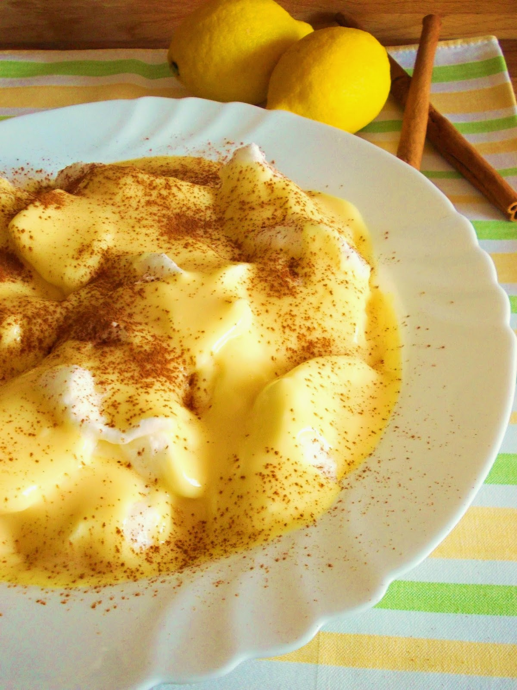

"Farófias" - Portuguese Soft Meringue with Custard

Description
Farófias is a classic Portuguese dessert that consists of clouds of meringue poached in milk and served with custard and a dusting of cinnamon powder. This dessert has a special place in the hearts of the Portuguese. Light and delicious, farófias comprise some of the best flavours of traditional Portuguese desserts: lemon, cinnamon, sugar, and eggs.
Ingredients
- 4 Eggs (Yolks and Whites Separated)
- 1l Whole Milk
- 1 slices Lemon Peel
- 1 Cinnamon Stick
- 1/2 Vanilla Bean
- 180g Sugar
- 1tbsp Corn Starch
- Cinnamon Powder – for Dusting
Steps
- Add the milk to a large pan for which you have a lid alongside the cinnamon stick, lemon peel, and 120g of sugar. Cut the vanilla bean open, scrape the seeds off the pod with the back of a knife, add both the seeds and the pod to the milk as well. Bring to a gentle simmer, then take off the heat and cover with the lid.
- While the milk infuses, add the egg whites to the bowl of a stand mixer. Beat with the whisk attachment over medium speed until the mixture foams up. With the mixer still on add the remaining 60g of sugar little by little. Increase the speed to high and carry on whisking until it reaches stiff and glossy peaks.
- Bring the infused milk back to a simmer.
- Use two tablespoons to shape the meringue into "torpedoes", then gently drop them into the milk. Cook for about 2 minutes flipping the farófias halfway through.
- Take them out with a skimmer, allowing the excess milk to drip down into the pan, transfer to a serving dish. Repeat the process until you finish the meringue.
- To make the custard, strain the infused milk into a small saucepan, add in the egg yolks lightly whisked, and the corn starch previously dissolved in a little bit of cold milk.
- Cook over low heat stirring frequently until the mixture is consistent enough to cover the back of a spoon. Allow it to cool down for a couple of minutes before drizzling over the meringue. Serve with a dusting of cinnamon powder! Enjoy!
Home